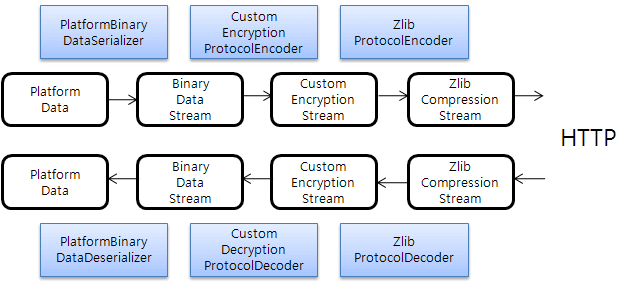

Conduct X-API Data Communication.
Conduct data transmit/receive with all clients using nexacro platform or PlatformData.
Most of data communication is conducted on HTTP, and transmitted/received after transformation into forms as XML.
Major classes are HttpPlatformRequest, HttpPlatformResponse, etc.
1. Start
Below is a simple JAP example transmitting/receiving data using X-API.
<%@ page import="com.nexacro.java.xapi.data.*" %>
<%@ page import="com.nexacro.java.xapi.tx.*" %>
<%@ page contentType="text/xml; charset=UTF-8" %>
<%
// Buffer initialization
out.clearBuffer();
// HttpPlatformRequest creation using HttpServletRequest
HttpPlatformRequest req = new HttpPlatformRequest(request);
// Data receive
req.receiveData();
// Obtain received data
PlatformData reqData = req.getData();
VariableList reqVarList = reqData.getVariableList();
// Obtain department name
String name = reqVarList.getString("name");
// Create data to transmit
PlatformData resData = new PlatformData();
VariableList resVarList = resData.getVariableList();
// Create DataSet to save personnel per each department
DataSet employees = new DataSet("employees");
// Add column to DataSet
employees.addColumn(new ColumnHeader("name", DataTypes.STRING, 8));
employees.addColumn(new ColumnHeader("jobTitle", DataTypes.STRING));
employees.addColumn(new ColumnHeader("number", DataTypes.INT));
employees.addColumn(new ColumnHeader("manager", DataTypes.BOOLEAN));
// Add personnel per department data
if ("R&D Center".equals(name)) {
// Add row
int row = employees.newRow();
// Set data of added row
employees.set(row, "name", "John Jones");
employees.set(row, "jobTitle", "developer");
employees.set(row, "number", 1234);
employees.set(row, "manager", false);
// ...
// Ordinary execution
resData.addDataSet(employees);
resVarList.add("ERROR_CODE", 200);
} else if ("Quality Assurance".equals(name)) {
// Add row
int row = employees.newRow();
// Set data of added row
employees.set(row, "name", "Tom Glover");
employees.set(row, "jobTitle", "manager");
employees.set(row, "number", 9876);
employees.set(row, "manager", true);
// ...
// Ordinary execution
resData.addDataSet(employees);
resVarList.add("ERROR_CODE", 200);
} else {
// Error occur
resVarList.add("ERROR_CODE", 500);
}
// HttpPlatformResponse creation using HttpServletResponse
HttpPlatformResponse res = new HttpPlatformResponse(response);
res.setData(resData);
// Data transition
res.sendData();
%>
|
JSP example using X-API
2. Data Transmit/Receive
Data communication with nexacro platform is usually executed on HTTP and transmitted/received after transformation to particular form.
Transmit/receive type(contentType) indicates the transformation of data into particular format data(stream) for transmitting/receiving,
protocol type(protocolType) indicates the execution of data compression, encryption, etc.
Major interface for data transformation as transmit/receive type(contentType) and protocol type(protocolType) are as below.
| Interface |
Detail |
DataSerializer |
Transform PlatformData into particular format data(stream) |
DataDeserializer |
Transfor particular format data(stream) to PlatformData |
ProtocolEncoder |
Execute data(stream) compression, encryption, etc |
ProtocolDecoder |
Decompression, decryption of data(stream) applied for compression, encryption |
3. Internal Flow of Data Transmit/Receive
Data Transmit Flow
- Transmit/receive after saving data to
PlatformData in the server
PlatformData transformed into particular format data(stream) by DataSerializer- Compression, encryption applied by the
ProtocolEncoder
- Data transmit/receive on HTTP
Data Receive Flow
- Receive compressed and encrypted data(stream) on HTTP
- Execute decompression and decryption by the
ProtocolDecoder
- Particular format data(stream) transformed into
PlatformData by DataDeserializer
- Data receive saved
PlatformData at Client
Below is an internal flow example of executing PlatformData encryption and compression to binary transmit/receive format.

4. HTTP Data Communication on Server
In order to conduct data communication on nexacro platform and HTTP, compose JSP or Servlet using HttpPlatformRequest and HttpPlatformResponse.
HttpPlatformRequest and HttpPlatformResponse use javax.servlet.http.HttpServletRequest
and javax.servlet.http.HttpServletResponse to conduct HTTP communication, and HttpPlatformRequest transform to PlatformData
after receiving data(stream) as nexacro platform, and on the contrary, HttpPlatformResponse transmit as nexacro platform after transforming PlatformData to data(stream).
// Create HttpPlatformRequest using HttpServletRequest
HttpPlatformRequest req = new HttpPlatformRequest(request);
// Receive data
req.receiveData();
PlatformData data = req.getData();
|
Receiving Data From
HttpServletRequest
PlatformData data = ...;
// Create HttpPlatformResponse using HttpServletResponse
HttpPlatformResponse res = new HttpPlatformResponse(response);
res.setData(data);
// Transmit data
res.sendData();
|
Transmitting Data from
HttpServletResponse
<%@ page import="com.nexacro.java.xapi.tx.*" %>
<%@ page import="com.nexacro.java.xapi.data.*" %>
<%@ page contentType="text/xml; charset=UTF-8" %>
<%
out.clearBuffer();
HttpPlatformRequest req = new HttpPlatformRequest(request);
req.receiveData();
PlatformData data = req.getData();
HttpPlatformResponse res = new HttpPlatformResponse(response);
res.setData(data);
res.sendData();
%>
|
echo.jsp Example
5. HTTP Data Communication on Client
PlatformHttpClient use X-API to conduct communication with services as composed JSP, and the process is as below.
PlatformHttpClient Creation- Data Transmission :
sendData
- Data Reception :
receiveData
- Conclude :
close
PlatformData reqData = ...;
// Client creation
String url = "http://host/context/service.jsp";
PlatformHttpClient client = new PlatformHttpClient(url);
// Data transmit
client.sendData(reqData);
// Data receive
PlatformData resData = client.receiveData();
// Conclude
client.close();
|
Communication with server using
PlatformHttpClient
6. Data Transmit/Receive Format
Transmit/receive format, as mentioned in 2. Data Transmit/Receive,
indicates the transformation of particular format data(stream) at the object to be transmitted/received, and realized format is as below.
| Constant Value |
Detail |
PlatformType.CONTENT_TYPE_XML |
XML format defined in Platform |
PlatformType.CONTENT_TYPE_BINARY |
Binary format defined in Platform |
PlatformType.CONTENT_TYPE_SSV |
SSV format defined in Platform |
<%@ page import="com.nexacro.java.xapi.data.*" %>
<%@ page import="com.nexacro.java.xapi.tx.*" %>
<%
// Receive data in XML format
HttpPlatformRequest req = new HttpPlatformRequest(request, PlatformType.CONTENT_TYPE_XML);
req.receiveData();
PlatformData data = req.getData();
// Transmit data in Binary format
HttpPlatformResponse res = new HttpPlatformResponse(response, PlatformType.CONTENT_TYPE_BINARY);
res.setData(data);
res.sendData();
%>
|
Receive data in XML format, and transmit data in Binary format example
In case the transmit/receive format is not defined by the user but originally provided, as shown below, automatically decide the transmit/receive format internally,
without separate transmit/receive format designation in HttpPlatformRequest.
<%@ page import="com.nexacro.java.xapi.data.*" %>
<%@ page import="com.nexacro.java.xapi.tx.*" %>
<%@ page contentType="text/xml; charset=UTF-8" %>
<%
out.clearBuffer();
// Receive data by automatic designation of transmit/receive format
HttpPlatformRequest req = new HttpPlatformRequest(request);
req.receiveData();
PlatformData data = req.getData();
// Transmit data by transmit/receive format designated by the HttpPlatformRequest
HttpPlatformResponse res = new HttpPlatformResponse(response, req);
res.setData(data);
res.sendData();
%>
|
HttpPlatformRequest, automatically designating transmit/receive format>
7. Data Protocol Format
Protocol format, as mentioned in 2. Data Transmit/Receive,
indicates the execution of data compression and encryption, and the realized format is as below.
| Constant Value |
Detail |
PlatformType.PROTOCOL_TYPE_ZLIB |
Compression by ZLIB method |
<%@ page import="com.nexacro.java.xapi.data.*" %>
<%@ page import="com.nexacro.java.xapi.tx.*" %>
<%
// Receive data
HttpPlatformRequest req = new HttpPlatformRequest(request);
req.receiveData();
PlatformData data = req.getData();
// Transmit data compressed by ZLIB method
HttpPlatformResponse res = new HttpPlatformResponse(response, PlatformType.CONTENT_TYPE_BINARY);
res.addProtocolType(PlatformType.PROTOCOL_TYPE_ZLIB);
res.setData(data);
res.sendData();
%>
|
Transmit data by compressing by ZLIB method
8. Data Divided Transmission
Generally, data is saved in DataSet, and data is delivered to nexacro platform using HttpPlatformResponse.
However, in case of bulk data with many number of data, all data must be saved to DataSet, causing overload to the system by using much of the memory.
In order to manage such situation, function of transmitting data by dividing several times is provided.
Although data is transmitted by dividing, numerous connection is not created, but all data are transmitted through one connection.
Data divided transmission should be processed as below.
- Object Initialization -
HttpPartPlatformResponse Creation
- Transmission Start -
HttpPartPlatformResponse.start() Summon (Can be skipped)
Variable Transmission - HttpPartPlatformResponse.sendVariable(Variable) Summon- Repeat
Variable Transmission
DataSet Transmission - HttpPartPlatformResponse.sendDataSet(DataSet) Summon- Repeat
DataSet Transmission
- Transmission Conclude -
HttpPartPlatformResponse.end() Summon (Summon Essential)
Variable transmission and DataSet transmission can be omitted respectively,
and in case Variable is transmitted after DataSet transmission, exception occurs.
// HttpPartPlatformResponse Creation
HttpPartPlatformResponse res = new HttpPartPlatformResponse(response);
// "company" Variable Transmission
Variable companyVar = Variable.createVariable("company", "Amazon.com, Inc.");
res.sendVariable(companyVar);
// "url" Variable Transmission
Variable urlVar = Variable.createVariable("url", "http://www.amazon.com/");
res.sendVariable(urlVar);
// "2011BestBooks" DataSet Transmission
DataSet bestBooksDs = new DataSet("2011BestBooks");
bestBooksDs.addColumn("title", DataTypes.STRING, 64);
bestBooksDs.addColumn("author", DataTypes.STRING, 64);
bestBooksDs.addColumn("publisher", DataTypes.STRING, 64);
bestBooksDs.addColumn("price", DataTypes.INT, 16);
// "2011BestBooks" DataSet Data Addition
String[][] bestBooks = {
{ "Lost in Shangri-La", "Mitchell Zuckoff", "Harper", "27" }
// ...
};
for (int i = 0; i < bestBooks.length; i++) {
int row = bestBooksDs.newRow();
bestBooksDs.set(row, "title", bestBooks[i][0]);
bestBooksDs.set(row, "author", bestBooks[i][1]);
bestBooksDs.set(row, "publisher", bestBooks[i][2]);
bestBooksDs.set(row, "price", Float.parseFloat(bestBooks[i][3]));
}
// "2011BestBooks" DataSet Transmission
// DataSet data after transmission are automatically deleted
res.sendDataSet(bestBooksDs);
// "fictionBooks" DataSet Creation
DataSet fictionBooksDs = new DataSet("fictionBooks");
fictionBooksDs.addColumn("title", DataTypes.STRING, 64);
fictionBooksDs.addColumn("author", DataTypes.STRING, 64);
fictionBooksDs.addColumn("publisher", DataTypes.STRING, 64);
fictionBooksDs.addColumn("price", DataTypes.INT, 16);
// "fictionBooks" DataSet "comic" Data Addition
String[][] comicBooks = {
{ "The Slackers Guide to U.S. History", "John Pfeiffer", "Adams Media", "13" }
// ...
};
for (int i = 0; i < comicBooks.length; i++) {
// ...
}
// "fictionBooks" DataSet "comic" Data Transmission
res.sendDataSet(fictionBooksDs);
// "fictionBooks" DataSet "drama" Data Addition
String[][] dramaBooks = {
{ "Megan's Way", "Melissa Foster", "Outskirts Press, Inc.", "15" }
// ...
};
for (int i = 0; i < dramaBooks.length; i++) {
// ...
}
// "fictionBooks" DataSet "drama" Data Transmission
res.sendDataSet(fictionBooksDs);
// "fictionBooks" DataSet "essays" Data Addition
String[][] essaysBooks = {
{ "Dracula", "Bram Stoker", "Bedrick. Blackie", "8" }
// ...
};
for (int i = 0; i < essaysBooks.length; i++) {
// ...
}
// "fictionBooks" DataSet "essays" Data Transmission
res.sendDataSet(fictionBooksDs);
// HttpPartPlatformResponse Conclude
res.end();
|
Data Divided Transmission
9. HTTP GET Method Data
Occasionally, data could be delivered in HTTP GET method, and received. In most cases, it should be a simple data.
For this, HttpPlatformRequest provide 2 properties as below.
| Property |
Data Type |
Valid Value |
Default |
Detail |
| http.getparameter.register |
String |
true or false |
false |
HTTP GET data enlistment when data reception |
| http.getparameter.asvariable |
String |
true or false |
false |
Transformation to Variable format when HTTP GET data enlistment; if false, HTTP GET data is transformed to DataSet format
|
// HttpPlatformRequest Creation
HttpPlatformRequest req = new HttpPlatformRequest(request);
// HTTP GET data enlistment setting
req.setProperty("http.getparameter.register", "true");
// Transformation setting to Variable format
req.setProperty("http.getparameter.asvariable", "true");
// Data reception
req.receiveData();
PlatformData data = req.getData();
// HttpPlatformResponse creation
HttpPlatformResponse res = new HttpPlatformResponse(response);
res.setData(data);
// Data transmission
res.sendData();
|
HTTP GET method data reception
10. File Upload
File upload indicates the transmission of file from client to server(X-API).
Since X-API is not an API for transmission/reception, file transmission/reception using other product or other package is recommended.
Especially, in case of transmitting/receiving file in XML format in X-API, take heed that it can affect its performance for usage of much memory.
If modification of data type(dataType) of transmitted or received data is attempted,
it can be modified using DataTypeChanger. Using this DataTypeChanger, byte array or String data can be saved as a file.
File Upload Process
- Save file data in byte array format to
DataSet in Client
- Transmit data from Client to Server
- Enlist
DataTypeChanger which transforms data type(dataType) of transmitted data in byte array format in Server to DataTypes.FILE data type(dataType)
- Data reception from Client to Server
- Data transformed to
DataTypes.FILE in the process of data reception from the Server is automatically saved as a temporary file
- Operation of saved temporary file in Server
<%@ page import="java.io.*" %>
<%@ page import="com.nexacro.java.xapi.tx.*" %>
<%@ page import="com.nexacro.java.xapi.data.*" %>
<%@ page contentType="text/xml; charset=UTF-8" %>
<%
// Buffer initialization
out.clearBuffer();
// HttpPlatformRequest creation
HttpPlatformRequest req = new HttpPlatformRequest(request);
// DataTypeChanger setting to save byte array data to file
req.setDataTypeChanger(new UploadDataTypeChanger());
// Data reception
req.receiveData();
// Refer received data
PlatformData reqData = req.getData();
// Move files to be temporarily saved to upload position
copyFiles(reqData);
// Transmission data creation
PlatformData resData = new PlatformData();
VariableList resVl = resData.getVariableList();
// Error code setting
resVl.add("ERROR_CODE", "200");
// HttpPlatformResponse creation
HttpPlatformResponse res = new HttpPlatformResponse(response, req);
// Transmission data setting
res.setData(resData);
// Data transmission
res.sendData();
%>
<%!
// Move files to be temporarily saved to upload position
void copyFiles(PlatformData data) {
// Upload position of files
String dir = "C:\\upload";
// Refer to DataSet with saved file data
DataSet ds = data.getDataSet("resources");
// Refer to DataSet row count
int count = (ds == null) ? 0 : ds.getRowCount();
// Rotate as DataSet row count, i.e. uploaded file count
for (int i = 0; i < count; i++) {
// Refer to file name
String name = ds.getString(i, "name");
// Refer to file size
int size = ds.getInt(i, "size");
// Refer to file modified time
long lastWriteTime = ds.getLong(i, "lastWriteTime");
// Refer to temporarily saved file path
String filename = ds.getString(i, "content");
// Temporarily saved file
File file = new File(filename);
// File to be moved to upload position
File dest = new File(dir, name);
// File movement
file.renameTo(dest);
}
}
// DataTypeChanger modifying data type(dataType) of received DataSet column
class UploadDataTypeChanger implements DataTypeChanger {
// Modify data type(dateType) of DataSet column with byte array data saved to byte DataTypes.FILE data type(dataType)
// Case received data type(dataType) is modified to DataTypes.FILE data typedataType)
// Data is automatically saved to temporary file, and DataSet saves the saved temporary file path.
public int getDataType(String dsName, String columnName, int dataType) {
// Case "resources" DataSet "content" column, return DataTypes.FILE data type(dataType)
if ("resources".equals(dsName) && "content".equals(columnName)) {
return DataTypes.FILE;
}
// For others, return original data type(dataType)
return dataType;
}
}
%>
|
File Upload JSP Example
11. File Download
File download indicates the transmission of file from Server(X-API) to Client.
Since X-API is not an API for transmission/reception, file transmission/reception using other product or other package is recommended.
Especially, in case of transmitting/receiving file in XML format in X-API, take heed that it can affect its performance for usage of much memory.
If file data transmission to Client is attempted, below 2 cases are available.
-
Add
DataSet column as DataTypes.BLOB type, read file data as byte array format, and set in DataSet.
-
Add
DataSet column as DataTypes.FILE type, and set file path to be downloaded.
When transmitting data, DataTypes.FILE type is automatically transformed to DataTypes.BLOB, and transmit file data located in file path.
Below is an example of file download using DataTypes.FILE data type(dataType).
<%@ page import="java.io.*" %>
<%@ page import="com.nexacro.java.xapi.tx.*" %>
<%@ page import="com.nexacro.java.xapi.data.*" %>
<%@ page contentType="text/xml; charset=UTF-8" %>
<%
// Buffer initialization
out.clearBuffer();
// HttpPlatformRequest creation
HttpPlatformRequest req = new HttpPlatformRequest(request);
// Data reception
req.receiveData();
// Refer to received data
PlatformData reqData = req.getData();
// Create transmission data including file data
PlatformData resData = createData();
// HttpPlatformResponse creation
HttpPlatformResponse res = new HttpPlatformResponse(response, req);
// Set transmission data
res.setData(resData);
// Data transmission
res.sendData();
%>
<%!
// Create transmission data including file data
PlatformData createData() {
// PlatformData creation
PlatformData data = new PlatformData();
// Create file data to save DataSet
DataSet ds = new DataSet("resources");
// Add file name column
ds.addColumn("name", DataTypes.STRING, 128);
// Add file size column
ds.addColumn("size", DataTypes.INT);
// Add file modified time column
ds.addColumn("lastWriteTime", DataTypes.LONG);
// Add file data column
// Case data type(dataType) is added as DataTypes.FILE data type(dataType)
// When data transmission, data type(dataType) is automatically transformed to DataTypes.BLOB data type(dataType)
// Data transmit file data in set file path.
ds.addColumn("content", DataTypes.FILE);
// DataSet row data addition
addRow(ds, "C:\\download\\data_structure.gif");
addRow(ds, "C:\\download\\serialize_flow.gif");
// PlatformData DataSet addition
data.addDataSet(ds);
// Return created PlatformData
return data;
}
// DataSet row data addition
void addRow(DataSet ds, String filename) {
// DataSet row addition
int row = ds.newRow();
// Create file to be downloaded
File file = new File(filename);
// Set file name
ds.set(row, "name", file.getName());
// Set file size
ds.set(row, "size", file.length());
// Set file modified time
ds.set(row, "lastWriteTime", file.lastModified());
// Set file path
ds.set(row, "content", file.getPath());
}
%>
|
File Download JSP Example
12. Data Communication using Stream
Occasionally, the necessity of data communication using InputStream and OutputStream as Socket and File occurs.
In such cases, data can be transmitted and received using PlatformRequest and PlatformResponse. Of course, single direction is also available.
InputStream in = ...;
// PlatformRequest creation
PlatformRequest req = new PlatformRequest(in);
// Data reception
req.receiveData();
PlatformData reqData = req.getData();
OutputStream out = ...;
// PlatformResponse creation
PlatformData resData = ...;
PlatformResponse res = new PlatformResponse(out);
res.setData(resData);
// PlatformResponse creation
res.sendData();
|
Data Communication using
PlatformRequest and
PlatformResponse
For reference, function identical to the PlatformHttpClient can be executed using PlatformRequest and PlatformResponse as shown below.
// Connection creation
String loc = "http://host/context/service.jsp";
URL url = new URL(loc);
HttpURLConnection conn = (HttpURLConnection) url.openConnection();
conn.setRequestProperty("Content-Type", "text/xml; charset=UTF-8");
conn.setRequestMethod("POST");
conn.setDoOutput(true);
conn.setDoInput(true);
// Data transmission
PlatformData sendingData = ...;
OutputStream out = conn.getOutputStream();
PlatformResponse res = new PlatformResponse(out, PlatformType.CONTENT_TYPE_XML, "UTF-8");
res.setData(sendingData);
res.sendData();
out.close();
// Data reception
InputStream in = conn.getInputStream();
PlatformRequest req = new PlatformRequest(in);
req.receiveData();
PlatformData receivedData = req.getData();
in.close();
// Connection close
conn.disconnect();
|
Communication with the Server using
PlatformRequest and
PlatformResponse
13. Data Load and Save From File
To read or write file data, below methods are provided.
- Directly read or write using
PlatformRequest and PlatformResponse
- Read or write data using
PlatformFileClient
// File with saved data
String sourceFilename = ...;
InputStream source = new FileInputStream(sourceFilename);
// Read data from file
PlatformRequest req = new PlatformRequest(source, PlatformType.CONTENT_TYPE_XML);
req.receiveData();
source.close();
PlatformData data = req.getData();
// File to save data
String targetFilename = ...;
OutputStream target = new FileOutputStream(targetFilename);
// Write data to file
PlatformResponse res = new PlatformResponse(target, PlatformType.CONTENT_TYPE_BINARY);
res.setData(data);
res.sendData();
target.close();
|
Reading and Writing File Data
// File with saved data
String sourceFilename = ...;
// File to save data
String targetFilename = ...;
// PlatformFileClient creation
PlatformFileClient client = new PlatformFileClient(sourceFilename, targetFilename);
// Type with saved data
client.setSourceContentType(PlatformType.CONTENT_TYPE_XML);
// Type to save data
client.setTargetContentType(PlatformType.CONTENT_TYPE_BINARY);
// Read data from file
PlatformData data = client.receiveData();
// Write data to file
client.sendData(data);
// Close
client.close();
|
Reading and Writing Data Using
PlatformFileClient
14. Transform PlatformData to XML Character String
In order to transform PlatformData to XML character string, use PlatformResponse.
i.e. deliver with PlatformResponse by creating buffer to save XML character string,
and PlatformResponse should output PlatformData as XML method.
PlatformData data = ...;
// Buffer to save XML character string
Writer out = new CharArrayWriter();
// Create PlatformResponse as CONTENT_TYPE_XML type
PlatformResponse res = new PlatformResponse(out, PlatformType.CONTENT_TYPE_XML);
res.setData(data);
// Save XML character string
res.sendData();
out.close();
// Saved XML character string
String xml = out.toString();
|
Transform
PlatformData to XML Character String
15. Transmission of Added, Modified, Deleted Data
DataSet saves the changed status when added, modified, or deleted original data before change.
For more information, refer to 11. DataSet Original Data and Changed Data.
PlatformResponse or HttpPlatformResponse are transmitted by dividing data saveType as above.
| Constant Value |
Detail |
DataSet.SAVE_TYPE_NONE |
Unset |
DataSet.SAVE_TYPE_ALL |
Save or transmit current data and all the added, modified, deleted data |
DataSet.SAVE_TYPE_NORMAL |
Save or transmit only the current data |
DataSet.SAVE_TYPE_UPDATED |
Save or transmit only the added and modified data |
DataSet.SAVE_TYPE_DELETED |
Save or transmit only the deleted data |
DataSet.SAVE_TYPE_CHANGED |
Save or transmit only the added, modified, deleted data |
Save type(saveType) is included in PlatformData and DataSet,
and DataSet save type is primarily applied,
and when DataSet save type is DataSet.SAVE_TYPE_NONE, PlatformData save type is applied.
If PlatformData save type is also DataSet.SAVE_TYPE_NONE, the default value, DataSet.SAVE_TYPE_NORMAL, is applied.
16. Saving Transmit/Receive Data(stream) using StreamLog
PlatformRequest and StreamLog conduct the role of saving received data(stream) from the Client to particular location.
This is to verify by saving file when error occurs during data reception from the Server or when the received data is suspicious.
The caveat is, since activating StreamLog can take much of the memory, only use when necessary.
// Create HttpPlatformRequest using HttpServletRequest
HttpPlatformRequest req = new HttpPlatformRequest(request);
// Received data(stream) log activation
req.setStreamLogEnabled(true);
// Received data(stream) log save location
req.setStreamLogDir("/home/log");
// ;Data reception
// When exception, received data(stream) is automatically saved in the log save location.
req.receiveData();
// Although without exception, compulsively save log when necessary
req.storeStreamLog();
PlatformData data = req.getData();
|
Saving Received Data(stream)
17. localhost Test
When requesting “localhost” or “127.0.0.1” as starting URL in the local PC, it can be functioned without license file.
In order to function without license file, it should be composed as below.
- Create
HttpPlatformRequest using HttpServletRequest.
- Create
HttpPlatformResponse using HttpServletResponse and HttpPlatformRequest created in the previous process.
- Request “localhost” or “127.0.0.1” as starting URL in local PC.
<%@ page import="com.nexacro.java.xapi.tx.*" %>
<%@ page import="com.nexacro.java.xapi.data.*" %>
<%@ page contentType="text/xml; charset=UTF-8" %>
<%
out.clearBuffer();
// localhost Test Method
// 1) Create HttpPlatformRequest using HttpServletRequest
// 2) Create HttpPlatformResponse using HttpServletResponse and HttpPlatformRequest created in the previous process.
// 3) Request “localhost” or “127.0.0.1” as starting URL in local PC.
HttpPlatformRequest req = new HttpPlatformRequest(request);
req.receiveData();
PlatformData data = req.getData();
HttpPlatformResponse res = new HttpPlatformResponse(response, req);
res.setData(data);
res.sendData();
%>
|
18. Output Internal Log of X-API
Internal logging of X-API is output using Apache Commons Logging.
For detail about Apache Commons Logging, refer to this.
Therefore, output log by setting logging according to the Apache Commons Logging standards, and refer to output log by analyzing when development or operation.
Below is an example of outputting internal log as a file using Apache Log4j.
- Copy Apache Log4j jar(log4j-x.x.x.jar) to the class path as X-API.
- Compose log4j.properties and copy to class path.
- Re-operate WAS(Web Application Server).
- Summon service using X-API.
- Log will be outputted into file at the set location in Apache Log4j.
log4j.logger.com.nexacro.java.xapi.data=DEBUG, file
log4j.logger.com.nexacro.java.xapi.tx=DEBUG, file
log4j.appender.file=org.apache.log4j.FileAppender
log4j.appender.file.File=xapi.log
log4j.appender.file.Append=false
log4j.appender.file.layout=org.apache.log4j.PatternLayout
log4j.appender.file.layout.ConversionPattern=%-4r [%t] %-5p %c %x - %m%n
|
log4j.properties Example
If under Apache Tomcat environment, it can be set as below.
- Copy Apache Commons Logging jar(commons-logging-x.x.x.jar) to $CATALINA_HOME/common/lib.
- Copy Apache Log4j jar(log4j-x.x.x.jar) to $CATALINA_HOME/common/lib.
- Compose log4j.properties and copy to $CATALINA_HOME/common/classes.
- Re-operate Apache Tomcat.
- Summon service using X-API.
- Log will be outputted into file at the set location in Apache Log4j.
log4j.rootLogger=INFO, tomcat
log4j.logger.com.nexacro.java.xapi.tx=DEBUG, xapi
log4j.logger.com.nexacro.java.xapi.data=DEBUG, xapi
log4j.appender.stdout=org.apache.log4j.ConsoleAppender
log4j.appender.stdout.layout=org.apache.log4j.PatternLayout
log4j.appender.stdout.layout.ConversionPattern=%-4r [%t] %-5p %c %x - %m%n
log4j.appender.tomcat=org.apache.log4j.FileAppender
log4j.appender.tomcat.File=${catalina.home}/logs/tomcat.log
log4j.appender.tomcat.Append=false
log4j.appender.tomcat.layout=org.apache.log4j.PatternLayout
log4j.appender.tomcat.layout.ConversionPattern=%-4r [%t] %-5p %c %x - %m%n
log4j.appender.xapi=org.apache.log4j.FileAppender
log4j.appender.xapi.File=${catalina.home}/logs/xapi.log
log4j.appender.xapi.Append=false
log4j.appender.xapi.layout=org.apache.log4j.PatternLayout
log4j.appender.xapi.layout.ConversionPattern=%-4r [%t] %-5p %c %x - %m%n
|
Apache Tomcat log4j.properties Example
19. Null Character(0x0) Error Included in the Data
When executing data communication with nexacro platform Runtime, malfunction can occur due to null character(0x00) treatment method difference between nexacro platform Runtime and X-API.
While in nexacro platform, null character is recognized as the closure of character string, but in X-API, null character can be included.
Therefore, when null character included data is transmitted to nexacro platform Runtime in X-API, nexacro platform Runtime will express only to null character, and other data will be ignored.
20. java.lang.IllegalStateException Exception When Data Transmission in JSP
When data is transmitted using HttpPlatformResponse in JSP,
it can be executed successfully, nut java.lang.IllegalStateException exception can occur. This actions differ for each Web Application Server.
The reason for this exception is because HttpPlatformResponse uses javax.servlet.http.HttpServletResponse OutputStream.
i.e. HttpPlatformResponse already summoned HttpServletResponse.getOutputStream() method,
and since JSP itself refer to this, it is expected that this exception is occurred from Web Application Server.
| Web Application Server |
Exception |
Exception Message (Can Differ for each Version) |
| IBM WebSphere |
Occur |
java.lang.IllegalStateException: OutputStream already obtained |
| Oracle WebLogic |
Ignore |
|
| Tmax JEUS |
Ignore |
|
| Apache Tomcat |
Occur |
java.lang.IllegalStateException: getOutputStream() has already been called for this response |
When data is transmitted in XML format, since it uses Writer in javax.servlet.http.HttpServletResponse, exception as above does not occur.
i.e. exception only occur when data is transmitted in SSV or binary format.
Countermeasure for such exception is as below.
- Ignore since it does not affect JSP performance. It should be able in the test equipment.
- Since exception only occurs when transmitting in SSV or binary format, transmit only in XML format.
- Prevent exception by summoning
out.clear() and out = pageContext.pushBody() on the JSP top.
- The fundamental reason is the transmission in binary format from JSP; compose in Servlet other than JSP.
<%@ page import="com.nexacro.java.xapi.tx.*" %>
<%@ page import="com.nexacro.java.xapi.data.*" %>
<%
out.clear();
out = pageContext.pushBody();
// ...
HttpPlatformResponse res = new HttpPlatformResponse(response, PlatformType.CONTENT_TYPE_BINARY);
res.setData(data);
res.sendData();
%>
|